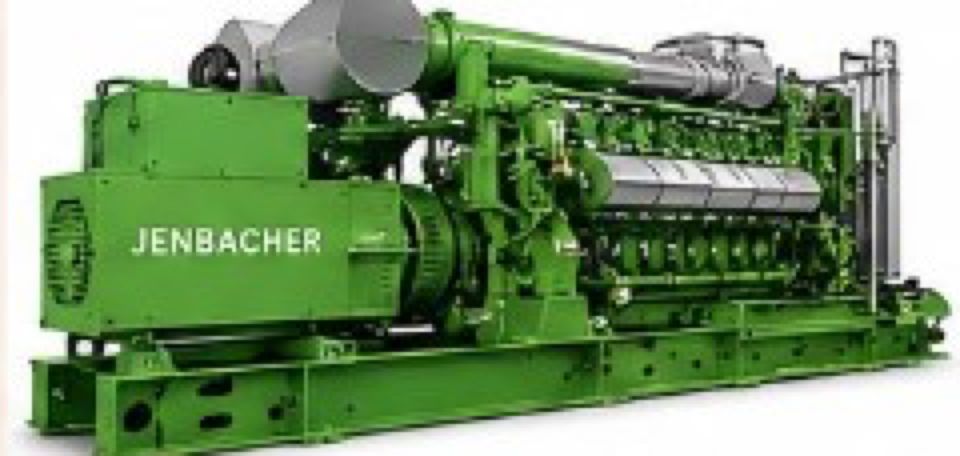
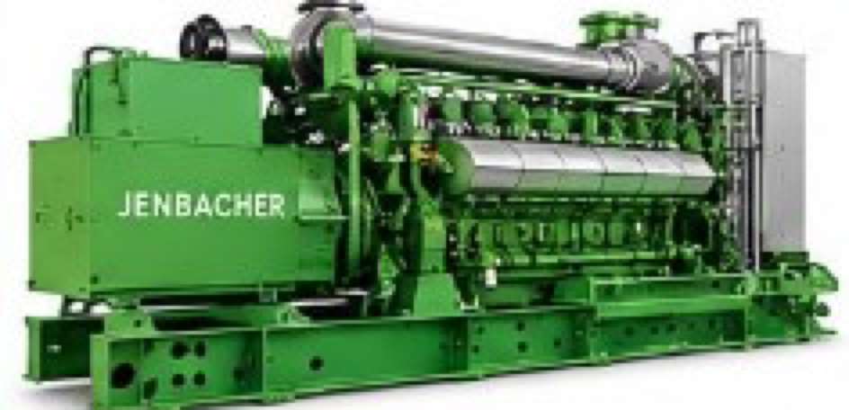
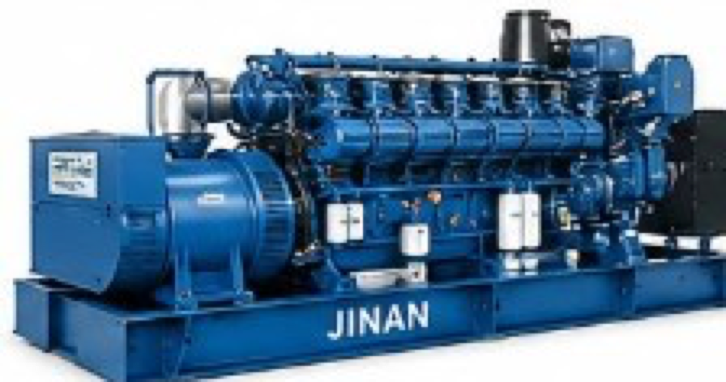

INFORME MENSUAL · INDICADORES ACR PAD 4
INDICADORES DE CONFIABILIDAD
SEPTIEMBRE 2026
INFORME MENSUAL · INDICADORES ACR PAD 4
SEPTIEMBRE 2026
Bloque completo · 01–30 sep
Misma energía · meta ≥ 98 %
Eventos registrados en el mes
Sep · 3.860 MWh · cierre GTE
| Equipo | Modelo | Fabricante | Instalada kW | Potencia media kW |
|---|---|---|---|---|
| G801 | J420C | Jenbacher | 1.400 | 1.175 |
| G802 | J420C | Jenbacher | 1.400 | 1.132 |
| G803 | J420C | Jenbacher | 1.400 | 1.136 |
| G804 | J420C | Jenbacher | 1.400 | 1.190 |
| G805T | J320C | Jenbacher | 1.000 | 850 |
| J320 | J320C | Jenbacher | 1.000 | 862 |
| G806T | JINAN | Jinan | 500 | 399 |
| G807T | JINAN | Jinan | 500 | 388 |
Instalada 1.400 kW
Potencia media 1.156 kW

Instalada 1.000 kW
Potencia media 856 kW

Instalada 500 kW
Potencia media 395 kW

| Unidad | Campo | Energía kWh | Stand-by h | Disp. | Conf. | Fallas | MTBF h | MTTR h |
|---|---|---|---|---|---|---|---|---|
| G801 | Acordionero | 346.558 | 413,1 | 99,83 % | 99,94 % | 3 | 101,90 | 0,15 |
| G802 | Acordionero | 726.800 | 27,15 | 97,06 % | 98,17 % | 3 | 223,90 | 4,38 |
| G803 | Acordionero | 751.304 | 1,05 | 98,73 % | 99,42 % | 5 | 141,96 | 0,84 |
| G804 | Acordionero | 819.800 | 25,5 | 99,93 % | 99,93 % | 1 | 694,00 | 0,50 |
| G805T | Acordionero | 523.440 | 103,8 | 99,97 % | 100 % | 0 | Sin fallas | 0 |
| G806T | Acordionero | 82.657 | 512,9 | 99,99 % | 99,99 % | 1 | 207,00 | 0,10 |
| G807T | Acordionero | 60.571 | 564 | 100 % | 100 % | 0 | Sin fallas | 0 |
| J320 | Acordionero | 548.924 | 69 | 99,43 % | 99,85 % | 2 | 323,45 | 0,55 |
| N+1 operacional | Acordionero | 3.860.054 | 1.716,5 | 100 % | 100 % | 15 | 381,57 | 1,30 |
| N+1 probabilístico | Acordionero | 3.860.054 | 1.716,5 | 99,93 % | 99,98 % | 15 | 381,57 | 1,30 |
El bloque operacional cierra en 100 % y el probabilístico en 99,93 % y 99,98 %. G802 cierra en 97,06 % de disponibilidad y 98,17 % de confiabilidad.
Septiembre registra 15 fallas. G803 registra 5, G801 y G802 registran 3 cada uno. G805T y G807T cierran sin fallas.
Meta de confiabilidad: 98 %. El bloque cierra en 100 % operacional y 99,98 % probabilístico. En el mes se registran 15 fallas.
| Unidad | Fallas | MTBF | MTTR | Cierre |
|---|---|---|---|---|
| N+1 | 15 | 381,57 h | 1,30 h | 15 eventos |
| G803 | 5 | 141,96 h | 0,84 h | 5 eventos |
| G801 | 3 | 101,90 h | 0,15 h | 3 eventos |
| G802 | 3 | 223,90 h | 4,38 h | 3 eventos |
| J320 | 2 | 323,45 h | 0,55 h | 2 eventos |
| G804 | 1 | 694,00 h | 0,50 h | 1 evento |
| G806T | 1 | 207,00 h | 0,10 h | 1 evento |
| G805T | 0 | Sin fallas | 0 | Sin eventos |
| G807T | 0 | Sin fallas | 0 | Sin eventos |
Disponibilidad y confiabilidad del bloque cierran en 100 %. G801 venía de 90,09 % en agosto y recupera 99,83 %.
Stand-by del bloque: 1.716,5 h. Energía: 3.860,1 MWh.
Disponibilidad 97,06 % y confiabilidad 98,17 %.
Stand-by 27,2 h. MTTR 4,38 h.
| Unidad | Disp. | Conf. | Stand-by | Lectura |
|---|---|---|---|---|
| G802 | 97,06 % | 98,17 % | 27,2 h | En el mes |
| G803 | 98,73 % | 99,42 % | 1,1 h | Sobre 98 % |
| J320 | 99,43 % | 99,85 % | 69 h | Sobre 98 % |
| G801 | 99,83 % | 99,94 % | 413,1 h | Recupera vs 90,09 % |
| G804 | 99,93 % | 99,93 % | 25,5 h | Sobre 98 % |
| G805T | 99,97 % | 100 % | 103,8 h | Sobre 98 % |
| G806T | 99,99 % | 99,99 % | 512,9 h | Sobre 98 % |
| G807T | 100 % | 100 % | 564 h | Sobre 98 % |
Pico día 20 · 152 MWh · valle día 9 · 98 MWh
| Fecha | Equipo | Fuera | Evento |
|---|---|---|---|
| 05-sep | G806T | 0,1 h | Comunicación, 14:05. Queda en stand-by. |
| 06-sep | G804 | 0,5 h | Sincronismo, 02:32 a 03:00. |
| 11-sep | G803 · 3 | 4 h | Detonación, Medenus y CPU del PLC. |
| 12-sep | G802 | 4 h | Ignición y knocking. |
| 12-sep | J320 | 1 h | Alta presión de MAP. |
| 13-sep | G802 | 9 h | Código 3345, desde la noche anterior. |
| 19-sep | G801 | 0,25 h | Alta temperatura HT. |
| 21-sep | G803 | 0,1 h | Knocking a la 01:17. |
| 23-sep | J320 | 0,1 h | Potencia inversa, 21:10 a 21:12. |
| 26-sep | G802 | 0,15 h | Bujías 1, 12 y 13, desde las 22:15. |
| 28-sep | G801 | 0,1 h | Knocking, 07:43 a 07:59. |
| 30-sep | G801 | 0,1 h | Knocking, 04:29 a 04:37. |
| 30-sep | G803 | 0,1 h | Knocking, 10:19 a 10:26. |
| Fecha | Equipo | Fuera | Evento |
|---|---|---|---|
| 01-sep | G803 | 0,1 h | Knocking, 14:37 a 14:58. |
| 02-sep | G802 | 0,1 h | Knocking, 01:23 a 01:29. |
| 04-sep | G807T | 0,1 h | Knocking. |
| 06-sep | G802 | 0,1 h | Knocking, 19:22 a 19:28. |
| 08-sep | G803 | 0,1 h | Knocking a las 09:00. |
| 17-sep | G802 | 0,1 h | Knocking. |
| 22-sep | G804 | 6 min | Knocking, 19:24 a 19:30. |
| 25-sep | G802 | 2 min | Knocking, 01:46 a 01:48. |
| 26-sep | G801 | 0,1 h | Knocking, 16:47 a 16:51. |
Nominal 1.400 kW. Llegó a 1.250 kW, el 89,3 %. MAP 2,65 en los tres cortes. Tensión 4.225 a 4.229 V, 180–181 A, 60 Hz, FP 0,95. Gas San Roque. Cumple la prueba.
| Hora | MAP | Escape min–med–máx | Ign. | kV | Consumo |
|---|---|---|---|---|---|
| 14:10 | 2,65 | 539–545–554 | 22,5 | 18,2 | 88,5 |
| 14:40 | 2,65 | 538–545–555 | 22,5 | 20,1 | 88,7 |
| 15:10 | 2,65 | 538–545–556 | 22,6 | 20,1 | 89,0 |
Frente al cierre de mayo: MAP 2,84 a 2,65. Escape medio 540 a 545. El gas pasa de TGI (103,5) a San Roque (89). El FP pasa de 0,83 a 0,95.
Nominal 1.400 kW. Llegó a 1.250 kW, el 89,3 %. MAP de 2,88 a 2,86. Tensión 4.206 a 4.207 V, corriente de 184 a 180 A, 60 Hz, FP 0,95. Gas San Roque. Cumple la prueba.
| Hora | MAP | Escape min–med–máx | Ign. | kV | Consumo |
|---|---|---|---|---|---|
| 12:10 | 2,88 | 532–548–564 | 22,5 | 19,3 | 90,5 |
| 12:40 | 2,86 | 533–548–566 | 22,8 | 19,5 | 91,5 |
| 13:10 | 2,86 | 535–549–565 | 23,0 | 20,3 | 92,1 |
Frente al cierre de mayo: MAP 3,01 a 2,86. Escape medio 529 a 549. El gas pasa de TGI (103,9) a San Roque (92,1). El FP pasa de 0,80 a 0,95.
| Corte | Unidad | Fecha | Nominal | Llegó | % esperada | MAP | Escape | FP | Gas | Cierre |
|---|---|---|---|---|---|---|---|---|---|---|
| Mayo | G801 | 05-may | 1.400 | 1.250 | 89,3 % | 2,84 | 540 | 0,83 | TGI | Cumple la prueba |
| Mayo | G802 | 04-may | 1.400 | 1.250 | 89,3 % | 2,90 | 525 | −0,99 | TGI | Cumple la prueba |
| Mayo | G803 | 05-may | 1.400 | 1.250 | 89,3 % | 3,01 | 529 | 0,80 | TGI | Cumple la prueba |
| Mayo | G804 | 04-may | 1.400 | 1.250 | 89,3 % | 2,74 | 556 | −0,95 | TGI | Cumple la prueba |
| Sep | G801 | 23-sep | 1.400 | 1.250 | 89,3 % | 2,65 | 545 | 0,95 | San Roque | Cumple la prueba |
| Sep | G803 | 25-sep | 1.400 | 1.250 | 89,3 % | 2,86 | 549 | 0,95 | San Roque | Cumple la prueba |
| Oct | G804 | 05-oct | 1.400 | 1.250 | 89,3 % | 2,79 | 561 | 0,99 | San Roque / TGI | Cumple la prueba |
| Oct | G805T | 04-oct | 1.000 | 950 | 95 % | 2,49 | 621 | 0,95 | TGI | Cumple la prueba |
2.644 MWh. G801 a G804. Es la mayor parte de los 3.860 MWh.
1.072 MWh. G805T y J320 sostienen el alza frente a agosto.
143 MWh. G806T y G807T. Ritmo del mes: 128,7 MWh/d, agosto 120,8. Pico el día 20: 152 MWh.
| Eq | PP h | Stand-by | A% |
|---|---|---|---|
| G801 | 0,75 | 413 | 99,83 % |
| G802 | 8,0 | 27,2 | 97,06 % |
| G803 | 4,95 | 1,1 | 98,73 % |
| G804 | 0 | 25,5 | 99,93 % |
| G805T | 0,2 | 103,8 | 99,97 % |
| G806T | 0 | 512,9 | 99,99 % |
| G807T | 0 | 564 | 100 % |
| J320 | 3,0 | 69 | 99,43 % |
| G801 | Cambio de control del 1 al 18, 413 h en stand-by. Ajuste de mezcla el 20-sep, 0,75 h PP. |
| G802 · 8,0 h | Preventivo completado: 08-sep 3 h, 26-sep 2 h y 28-sep 3 h. |
| G803 · 4,95 h | Preventivo el 09-sep, 3,7 h, y ajuste de mezcla el 20-sep, 1,25 h. |
| J320 · 3,0 h | Vibraciones el 02-sep, 1 h, y mantenimiento de 1.000 h el 07-sep, 2 h. |
| G805T · 0,2 h | Ventana PP el 01-sep. Completada. |
| G807T · 48 h | 29 y 30 sep, cambio a la J420. Quedó en stand-by. |
| Programa | El preventivo del mes se completó. G804 y G806T no tuvieron ventana PP. |
Tenemos stock en Campo, San Martín y Bucaramanga.
Seguridad durante la semana.
Gestión de permisos durante el mes.
Inspecciones de seguridad ejecutadas.
Fichas de seguridad actualizadas y etiquetado al día.
Jornada realizada en el periodo.
Disposición con gestores autorizados. Sólidos con SAPS y aceites con EMARACK.
Socialización del plan de gestión integral de residuos.
Aspectos e impactos ambientales.
Indicadores ambientales, estadísticas y dossier trimestral entregados.